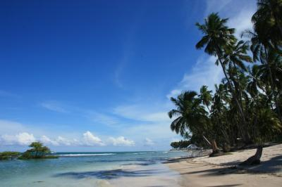

Beach
 A beach is a geological landform along the shoreline of a body of water. It usually consists of loose particles which are often composed of rock, such as sand, gravel, shingle, pebbles, or cobble. The particles of which the beach is composed can sometimes instead have biological origins, such as shell fragments or coralline algae fragments. Beaches often occur along coastal areas where wave or current action deposits and reworks sediments. Although the seashore is most commonly associated with the word "beach", beaches are not only found by the sea or ocean: beaches also occur at the margin of the land along lakes and rivers where sediments are reworked or deposited. Main body (div with id content)Let's climb up a mountain!